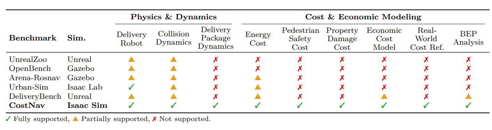
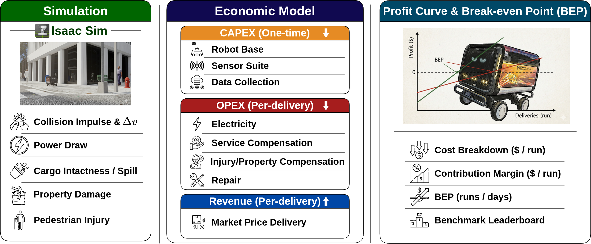
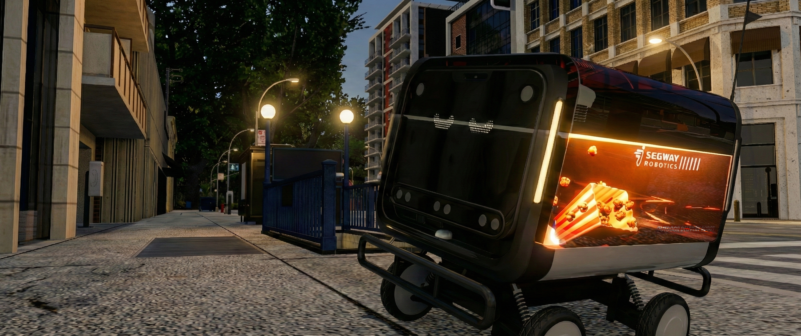
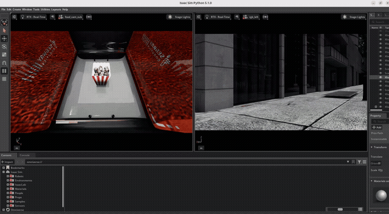

CostNav: A Navigation Benchmark for Cost-Aware Evaluation of Embodied Agents
배달 로봇이 돈을 벌 수 있는지 냉정하게 따져본 벤치마크.
결론부터 말하면 못 번다
- 원제: CostNav: A Navigation Benchmark for Cost-Aware Evaluation of Embodied Agents
- 저자: Haebin Seong, Sungmin Kim 외 (MAUM.AI1, 서울대학교)
- 발표: arXiv:2511.20216, 2025년 11월 (CES 2026 발표)
- 링크: arXiv | GitHub
배달 로봇 네비게이션 연구의 성능 지표와 실제 상업적 수익성 사이의 간극을 정량적으로 폭로한 최초의 벤치마크다. 기존 벤치마크들이 "목적지에 잘 도착하는가"만 물었다면, CostNav는 "그래서 돈은 버는가"를 묻는다. 현실은 잔인하다
1. 개요
자율 배달 로봇이 대학 캠퍼스와 도심 인도를 누비는 시대가 왔다. Starship Technologies는 2024년 기준 600만 건 넘게 배달을 완료했고, 2025년에는 Uber Eats와 제휴까지 맺었다. 배달 로봇 시장 규모가 2026년 550억 달러에 달할 것이라는 전망도 나온다.
그런데 정작 연구 커뮤니티에서는 이 로봇들이 "경제적으로 쓸 만한가"를 제대로 따져본 적이 없었다. 기존 벤치마크2는 성공률, 충돌 횟수, 경로 길이 같은 기술 지표만 측정한다. 성공률 95%짜리 로봇이 90%짜리보다 항상 좋을까? 전자가 센서 값만 3배 비싸고 전력도 2배 먹는다면 이야기가 달라진다.
CostNav는 바로 이 질문에 답하기 위해 만들어진 초소형 네비게이션 경제성 테스트베드(Micro-Navigation Economic Testbed)다. 배달 한 건당 하드웨어 비용, 에너지 비용, 유지보수 비용, 충돌로 인한 배상금까지 전부 계산해서 배달 한 번에 얼마를 버는가(profit per run)를 따진다. 결과는? 현재 최선의 학습 기반 방법으로도 배달 한 번에 30달러를 까먹는다. 사장님 우리 배달 안 하면 안 돼요?
2. 배경 및 관련 연구
2.1. 기존 벤치마크의 문제점
Embodied AI 커뮤니티에서 네비게이션 벤치마크는 꽤 오래전부터 있었다. Habitat이 실내 PointGoal/ObjectGoal 네비게이션용 시뮬레이터를 내놨고, Gibson은 실제 3D 스캔 데이터를 활용했다. 실외로 나가면 CARLA가 자율주행 시뮬레이션을, Urban-Sim이 도심 이동 로봇 시나리오를 제공한다.

[그림 1] CostNav와 기존 벤치마크 비교. 물리 시뮬레이션과 경제성 모델링을 동시에 지원하는 벤치마크는 CostNav가 유일하다.
다른 벤치마크들이 게을렀다기보다는 아무도 이런 걸 하고 싶지 않았을 뿐이다
문제는 이 벤치마크들이 전부 기술 지표에만 집중한다는 것이다.
| 지표 | 의미 | 경제성 반영 |
|---|---|---|
| 성공률 (%) | 목적지 도착 비율 | X |
| 충돌 횟수 | 부딪힌 횟수 | X |
| 경로 길이 (m) | 이동 거리 | X |
| 탐색 시간 (s) | 소요 시간 | X |
| 배달당 수익 ($) | 돈을 얼마나 버는가 | O |
성공률이 높으면 좋은 거 아닌가 싶겠지만, 현실은 그리 단순하지 않다. 쓰레기통에 살짝 부딪히는 것과 LiDAR 센서에 충격이 가는 것은 충돌 1회로는 같아도 수리비 차이가 어마어마하다. 배달이 "성공"해도 급회전 때문에 음료가 쏟아지면 환불해줘야 한다. 기존 지표로는 이런 차이를 잡아낼 수가 없다.
2.2. 배달 로봇 시장의 현실
배달 로봇 스타트업들에게 "어떤 네비게이션 기술을 쓸까"는 생존이 걸린 문제다. 비싼 LiDAR에 룰 기반 플래닝을 얹을까, 아니면 값싼 RGB-D 카메라에 딥러닝을 태울까? 센서 값이 3배 차이 나는데 성공률이 5%밖에 안 벌어진다면, 싼 쪽이 사업적으로 훨씬 낫다.
그런데 이런 의사결정에 필요한 데이터가 없었다. 배달 로봇 회사들의 비용 구조는 기업 비밀이고, 학계 논문은 성능 숫자만 보여준다. CostNav는 이 빈자리를 채우겠다고 나선 거다.
3. 핵심 방법론: 경제적 비용 모델
3.1. 전체 파이프라인
CostNav의 구조를 한 장으로 요약하면 아래 그림과 같다.

[그림 2] CostNav의 전체 파이프라인. 시뮬레이션에서 충돌 역학, 에너지 소비, 배달 시간, 음식 상태를 측정하고, 이걸 실제 비용/수익 모델에 대입해서 수익 곡선과 손익분기점을 계산한다.
시뮬레이션에서 돈 잃는 걸로 끝나니 다행이다
흐름은 간단하다.
- 시뮬레이션 (NVIDIA Isaac Sim): 로봇을 가상 도시에서 달리게 하면서 충돌 충격량, 전력 소비, 배달 소요 시간, 음식 흘림 여부를 전부 기록한다
- 비용 모델: 기록된 데이터를 실제 시장 가격에 대입한다. 전기요금은 미국 상업용 요율, 배달 수수료는 Starship 실제 가격, 수리비는 하드웨어 원가 기반
- 수익성 분석: 배달 한 건당 이익(profit per run)을 계산하고, 초기 투자비를 회수하려면 몇 번 배달해야 하는지(손익분기점, BEP)를 구한다
핵심 공식은 이렇다.
쉽게 풀면, "번 돈에서 초기 투자금과 배달할 때마다 드는 비용을 빼면 이익이다." 당연한 소리 같지만, 이걸 로봇 네비게이션에 적용한 논문은 이게 처음이다.
3.2. 초기 투자 비용 (CAPEX)
로봇을 굴리려면 일단 사야 한다. 초기 투자 비용은 크게 하드웨어와 데이터 수집/학습으로 나뉜다.
하드웨어 비용 ($C_{\text{hardware}}$)
논문에서 사용한 로봇의 하드웨어 구성을 보면:
| 부품 | 가격 | 비고 |
|---|---|---|
| COCO 배달 로봇 본체 | $8,600 | Segway 기반 |
| RGB-D 카메라 (Intel RealSense D435) × 2 | $600 | 개당 $300 |
| NVIDIA Jetson Orin Developer Kit | $2,389 | 온디바이스 추론용 |
| 합계 | $11,589 |
로봇 한 대 가격이 중고차 한 대 값이다
센서 구성에 따라 가격이 크게 달라진다. LiDAR를 쓰는 Nav2 방식은 $13,000, 카메라만 쓰는 학습 기반 방법은 $8,000, GPS까지 붙이는 CANVAS는 $10,000이다.
| 방법 | 하드웨어 비용 | 데이터 수집비 | 총 CAPEX |
|---|---|---|---|
| Nav2 AMCL | $13,000 | $0 | $13,000 |
| Nav2 GPS | $13,000 | $0 | $13,000 |
| GNM | $8,000 | $2,165.79 | $10,165.79 |
| ViNT | $8,000 | $2,165.79 | $10,165.79 |
| NoMaD | $8,000 | $2,165.79 | $10,165.79 |
| NavDP | $8,000 | $2,165.79 | $10,165.79 |
| CANVAS | $10,000 | $2,165.79 | $12,165.79 |
데이터 수집 비용 ($C_{\text{train}}$)
룰 기반 방식(Nav2)은 지도만 있으면 되니까 데이터 수집 비용이 0이다. 반면 학습 기반 방식은 사람이 로봇을 조종하면서 학습 데이터를 모아야 한다.
시급 $33로 65.63시간 일하면 $2,165.79. 여기에 학습 중 충돌로 인한 수리비 $16,238이 추가된다. 학습 534 에피소드 동안 충돌률이 52.3%나 돼서 수리비가 하드웨어 원가의 1.4배에 달한다. 학습시키다 로봇이 먼저 박살나는 셈
결국 학습 기반 방법의 총 초기 투자비는 $27,827이다. 로봇 살 돈의 2.4배를 학습에 쏟아부어야 한다.
3.3. 운영 비용 (OPEX)
로봇을 사서 학습까지 시켰으면 이제 실전이다. 배달 한 건마다 들어가는 비용을 따져보자.
에너지 비용 ($C_{\text{energy}}$)
시뮬레이션에서 측정한 평균 소비전력 551.7W를 1시간 기준으로 환산하면3:
배달 한 번에 전기세 11센트. 이건 거의 무시할 수준이다.
유지보수 비용 ($C_{\text{maint}}$)
여기가 진짜 돈 먹는 블랙홀이다.
$c_{\text{shock}}$는 충격 계수로 $0.00001/\text{N·s}$이고, $I_{\text{collision}}$은 시뮬레이션에서 측정한 충돌 충격량(N·s)이다. 충돌률이 54%, 평균 충격량이 501.7 N·s인 현재 베이스라인에서:
배달 한 번에 유지보수비 31달러 40센트. 이쯤 되면 사람이 직접 배달하는 게 낫지 않나
서비스 보상 비용
배달이 실패하거나 음식이 엎어지면 환불해줘야 한다. 평균 환불금은 배달 수수료($3.49) + 음식 가격($31.93) = $35.42. 배달 100건 중 54건은 충돌로 끝나고, 3건은 타임아웃이니 보상 비용도 꽤 크다.
보행자 안전 비용
로봇이 사람과 부딪히면 부상 정도에 따라 배상금이 천정부지로 뛴다. CostNav는 자동차 사고 연구에서 쓰이는 AIS(Abbreviated Injury Scale)를 적용했다.
| AIS 등급 | 부상 정도 | 비용 |
|---|---|---|
| AIS 0 | 부상 없음 | $380 |
| AIS 1 | 경상 | $8,487 |
| AIS 2 | 중등도 | $60,464 |
| AIS 3 | 중상 | $261,200 |
50kg짜리 로봇이 시속 7km로 달리다 사람에게 부딪히면, 충돌 시 속도 변화(delta-v)로 부상 확률을 계산한다. 다행히 배달 로봇은 자동차보다 훨씬 느리고 가벼우니까 AIS 3 수준의 중상 확률은 극히 낮지만, 건당 $9에서 $29까지 안전 비용이 발생한다.
재산 피해 비용
로봇이 인도 위의 물건을 들이받을 수도 있다.
| 피해 대상 | 비용 |
|---|---|
| 우체통 | $50 |
| 쓰레기통 | $50 |
| 건물 유리 | $300 |
| 볼라드 | $65 |
시카고에서는 실제로 배달 로봇이 버스 정류장 유리를 박살낸 사건이 일주일에 두 번이나 발생했다4
운영 비용 종합
7가지 방법론의 운영 비용을 한 표에 정리하면 이렇다.
| 항목 | Nav2 AMCL | Nav2 GPS | GNM | ViNT | NoMaD | NavDP | CANVAS |
|---|---|---|---|---|---|---|---|
| 전기 | $0.003 | $0.003 | $0.001 | $0.001 | $0.000 | $0.000 | $0.003 |
| 서비스 보상 | $5.40 | $10.13 | $3.49 | $3.14 | $3.46 | $3.49 | $3.89 |
| 보행자 안전 | $29.32 | $20.58 | $11.64 | $29.89 | $9.76 | $9.30 | $14.38 |
| 재산 피해 | $0.00 | $1.00 | $3.65 | $6.00 | $12.00 | $0.00 | $6.00 |
| 수리 | $10.85 | $7.23 | $5.26 | $11.84 | $6.90 | $2.96 | $6.58 |
| 합계 | $45.57 | $38.95 | $24.04 | $50.87 | $32.12 | $15.75 | $30.85 |
NavDP가 $15.75로 가장 저렴하고, ViNT가 $50.87로 가장 비싸다. 보행자 안전 비용 하나가 ViNT를 최악으로 만들었다.
3.4. 수익 모델
수익 계산은 의외로 단순하다.
배달 기본 수수료 $r_{\text{base}}$는 $3.49다. Starship Technologies와 사우스캐롤라이나 대학교의 실제 배달 서비스 가격을 참고했다. 최대 6km 배달 기준이다.
$f_{\text{sla}}$는 SLA(서비스 수준 합의) 준수 여부인데, 규칙이 칼같다.
10분 안에 도착하면 $3.49를 받고, 10분을 넘기면 0원이다. 10분 1초에 도착해도 돈을 한 푼도 못 받는다. 현실 세계의 환불 정책이란 이런 거다
3.5. 손익분기점 분석
분모인 $R - C_{\text{run}}$이 배달 한 건당 순이익이다. 이게 양수여야 배달을 할수록 돈을 번다. 음수면? 배달을 할수록 적자가 쌓인다. 그리고 BEP는 "없음"이 된다. 이 시스템은 영원히 본전을 못 뽑는다는 뜻이다.5
4. 시뮬레이션 환경
4.1. 로봇 플랫폼
CostNav는 COCO 배달 로봇을 사용한다. Segway E1 기반의 실제 배달 로봇 모델이다.

[그림 3] CostNav 시뮬레이션 속 배달 로봇. NVIDIA Isaac Sim에서 실제 도시 환경을 재현했다. 급회전하면 음료가 쏟아지는 것까지 시뮬레이션한다.
이 정도면 리얼리즘의 끝판왕
로봇 스펙을 정리하면:
| 항목 | 스펙 |
|---|---|
| 크기 | 60 × 50 × 55 cm |
| 무게 | 25 kg (적재물 포함) |
| 최대 속도 | 2.0 m/s (시속 7.2km) |
| 카메라 | RGB-D × 2 (1920×1080, 학습 시 240×135로 다운샘플) |
| 컴퓨트 | NVIDIA Jetson Orin |
| 관측 차원 | 72,908 (시각 72,900 + 자기수용감각 8) |
4.2. 도시 환경과 물리 시뮬레이션
시뮬레이션은 NVIDIA Isaac Lab 위에 구축했다. 실제 도시 지도를 기반으로 인도, 횡단보도, 공원, 건물이 늘어선 거리를 만들었다. 보행자, 가로 시설물, 건물이 전부 들어가 있다.
물리 엔진이 잡아내는 것들:
- 에너지 소비: 모터 토크와 속도에서 실시간 전력 소비를 계산
- 충돌 역학: 접촉 시 충격량(impulse)을 N·s 단위로 정밀 측정
- 음식 물리: 팝콘 입자를 시뮬레이션해서 급회전이나 충돌 시 음식이 얼마나 쏟아지는지까지 계산6

[그림 4] 팝콘 물리 시뮬레이션. 로봇이 움직일 때 적재함 안의 팝콘 입자가 어떻게 흔들리는지를 시뮬레이션한다. 이걸로 음식 낙하/흘림 비율을 측정한다.
팝콘 하나하나까지 시뮬레이션하는 이 집념
4.3. 경제적 난이도 분류
CostNav는 경제적 난이도를 3단계로 나눈다.
| 레벨 | 이름 | 환경 | 특징 |
|---|---|---|---|
| Level 1 | Ideal (이상적) | 빈 인도 | 장애물 없음, 최적 조건. 이론적 최대 처리량 측정용 |
| Level 2 | Dynamic (동적) | 보행자 있는 인도 | 보행자 회피, 가로 시설물, 안전과 효율의 트레이드오프 |
| Level 3 | Real-World (현실) | 악천후, 야간, 오래된 지도 | 날씨, 조명, 예상치 못한 장애물. 구조 비용 발생 |
이번 논문에서는 Level 1과 Level 2를 실험했다. Level 3는 향후 과제로 남겨뒀다. 현실 세계는 아직 너무 무섭다
5. 베이스라인 방법론
CostNav는 룰 기반 2종과 학습 기반 5종, 총 7가지 방법을 평가했다.
룰 기반 (LiDAR + 고전적 플래닝)
- Nav2 AMCL: ROS2의 Nav2 스택에 AMCL(적응적 몬테카를로 위치추정) 사용. LiDAR와 사전 지도 필요
- Nav2 GPS: Nav2에 GPS/RTK 위치추정. LiDAR + GPS 구성
학습 기반 (카메라 + 딥러닝)
- GNM (General Navigation Models): 범용 네비게이션 모델
- ViNT (Visual Navigation Transformer): 비전 트랜스포머 기반
- NoMaD (Goal Masking Diffusion): 디퓨전 모델 기반 네비게이션
- NavDP: 네비게이션 디퓨전 정책
- CANVAS: 상식 기반(Commonsense-Aware) 로봇 네비게이션. MAUM.AI의 WoRV 팀이 만든 방법론7
논문에서 집중적으로 분석한 초기 베이스라인은 LB-Local(Learning-Based On-Device)이다. RGB-D 카메라 2대만 쓰고, CNN 인코더(컨볼루션 레이어 3개, 필터 16/32/64) + MLP(히든 유닛 256, 128)로 구성된 비교적 간단한 아키텍처다. PPO로 학습하고 Jetson Orin에서 온디바이스 추론한다. 비싼 LiDAR 없이 카메라만으로 배달하는 실전적 시나리오다.
6. 실험 및 결과
6.1. 시뮬레이션 결과
도심 인도에서 100회 평가를 돌렸다. 평균 배달 거리 20m, 평균 배달 시간 0.1시간(6분)의 초소형 테스트베드 스케일이다. 실제 배달은 최대 6km, 1시간이니까 그 차이만큼 비용을 선형 스케일링해서 현실에 투영한다.
Table 1. 시뮬레이션 평가 결과
| 지표 | 값 |
|---|---|
| 에피소드 종료 유형 | |
| 충돌 (%) | 54.0 |
| 도착 (%) | 43.0 |
| 타임아웃 (%) | 3.0 |
| 물리 지표 | |
| 충돌 충격량 (N·s) | 501.7 ± 2285.7 |
| 평균 소비전력 (W) | 551.7 ± 175.3 |
| 최대 소비전력 (W) | 670.7 ± 215.3 |
| 에피소드 통계 | |
| 평균 배달 시간 (hr) | 0.1 |
| 평균 배달 거리 (m) | 20 |
| 타임아웃 기준 (sec) | 600 |
54%가 충돌로 끝난다. 100번 배달 보내면 54번은 어딘가에 부딪혀서 멈춘다는 거다. 도착에 성공한 건 43%뿐. 절반 이상이 중간에 쓰러지는 배달부라니
학습 데이터 통계도 흥미롭다.
Table 2. 학습 에피소드 통계
| 지표 | 값 |
|---|---|
| 총 에피소드 | 534 |
| 평균 에피소드 시간 (sec) | 294.5 |
| 도착 (%) | 17.7 |
| 충돌 (%) | 52.3 |
| 타임아웃 (%) | 30.0 |
학습 중에도 절반 이상이 충돌이다. 도착 성공률은 17.7%밖에 안 된다. 로봇이 배우는 동안 부딪히고 또 부딪힌다. 그래서 학습 비용에 수리비가 포함되는 거다.
6.2. 경제성 분석: 배달 한 번에 30달러 손해
자, 이제 돈 이야기를 해보자. 모든 숫자를 1시간, 6km 현실 배달 기준으로 환산한 결과다.
Table 3. 종합 경제 성과 (LB-Local)
| 항목 | 금액 |
|---|---|
| 초기 투자 비용 | |
| 하드웨어 | $11,589 |
| 데이터 수집/학습 | $16,238 |
| 총 초기 비용 | $27,827 |
| 운영 비용 ($/건) | |
| 에너지 | $0.11 |
| 유지보수 | $31.40 |
| 총 운영 비용 | $31.51 |
| 수익 | |
| SLA 준수율 (%) | 43.0 |
| 수익 ($/건) | $1.501 |
| 수익성 | |
| 이익 ($/건) | -$30.009 |
| 손익분기점 | 없음 |
배달 한 번에 $1.50 벌고 $31.51 쓴다. 배달 한 번마다 30달러를 까먹는 구조다.
손익분기점은 당연히 존재하지 않는다. 배달을 하면 할수록 적자가 쌓인다. 1,000번 배달하면 누적 손실이 $57,836($27,827 + $30.009 × 1,000)이다. 배달 안 하는 게 최선의 경영 전략
6.3. 비용 구조 분석
운영 비용 $31.51의 구성을 따져보면 진범이 보인다.
| 항목 | 비용 | 비중 |
|---|---|---|
| 에너지 | $0.11 | 0.3% |
| 유지보수 | $31.40 | 99.7% |
에너지 비용은 전체의 0.3%에 불과하다. 전기세는 사실상 공짜나 다름없다.
문제는 유지보수다. 운영 비용의 99.7%가 충돌로 인한 유지보수비다. 충돌률 54%, 평균 충격량 501.7 N·s가 합쳐져서 매번 $31.40의 수리비가 발생한다. 에너지 효율을 아무리 개선해봤자 의미가 없다. 충돌을 줄이는 게 경제성 개선의 유일한 길이다.
거칠게 비유하면 이런 거다. 택시 기사가 "기름값을 아끼려고 에코 드라이빙을 한다"고 해도 매번 사고를 내서 수리비로 30만 원을 쓴다면, 기름값 절약은 아무 소용이 없다.
6.4. 손익분기점 분석
현재 상태에서 손익분기점에 도달하려면 세 가지 중 하나를 해야 한다.
- 충돌률을 54%에서 거의 0%로 낮추기: 유지보수비를 $31.40에서 $1.50 이하로
- SLA 준수율을 43%에서 거의 100%로 올리기: 수익을 $1.50에서 $3.49로
- 위 두 가지를 동시에 개선
논문에서는 "이론적으로 수익을 낼 수 있는 시나리오"도 계산해뒀다.
| 시나리오 | 충돌률 | SLA 준수율 | 유지보수비 | 수익 | 이익/건 | BEP |
|---|---|---|---|---|---|---|
| 현재 | 54% | 43% | $31.40 | $1.50 | -$30.01 | 없음 |
| 이론적 가능 | 5% | 90% | $2.91 | $3.14 | +$0.12 | ~232,000건 |
충돌률을 5%로 줄이고 SLA 준수율을 90%로 올리면 건당 12센트의 이익이 발생한다. 손익분기점은 약 232,000건. 하루 25건 배달한다고 치면 25.4년 걸린다.8 돈을 벌 수는 있지만, 로봇 수명 2년 안에 본전을 뽑기엔 택도 없다.
6.5. 기존 지표와의 비교
기존 지표만 보면 그렇게까지 나쁘지 않다. 성공률 43%, 충돌률 54%, 경로 길이 20m. "반 정도는 성공하네" 하고 넘어갈 수 있는 숫자다.
Table 4. 기존 지표 vs. CostNav 경제 지표
| 지표 | LB-Local |
|---|---|
| 기존 지표 | |
| 성공률 (%) | 43.0 |
| 충돌률 (%) | 54.0 |
| 경로 길이 (m) | 20 |
| CostNav 경제 지표 | |
| 하드웨어 비용 ($) | 11,589 |
| 학습 비용 ($) | 16,238 |
| 에너지 비용 ($/건) | 0.11 |
| 유지보수 비용 ($/건) | 31.40 |
| SLA 준수율 (%) | 43.0 |
| 수익 ($/건) | 1.501 |
| 이익 ($/건) | -30.009 |
| BEP (건) | 없음 |
성공률 43%를 경제 지표로 번역하면 "배달 한 번에 30달러 손해"가 된다. 같은 현상을 보고 있지만 해석이 완전히 달라진다. 기존 지표로는 "성능 개선이 필요하다" 정도의 결론이 나오지만, CostNav 지표로는 "이 사업은 현재 상태에서 절대 수익을 낼 수 없다"는 결론이 나온다.
6.6. 7가지 방법론 비교
논문의 후속 버전(v5)과 GitHub 문서에는 7가지 방법론의 전체 비교 데이터가 공개되어 있다.
| 방법 | 유형 | CAPEX | OPEX ($/건) | 최적화 타깃 |
|---|---|---|---|---|
| Nav2 AMCL | 룰 기반 | $13,000 | $45.57 | 비쌈, 충돌 많음 |
| Nav2 GPS | 룰 기반 | $13,000 | $38.95 | 비쌈 |
| GNM | 학습 | $10,165 | $24.04 | 중간 |
| ViNT | 학습 | $10,165 | $50.87 | 보행자 안전 비용 폭발 |
| NoMaD | 학습 | $10,165 | $32.12 | 재산 피해 높음 |
| NavDP | 학습 | $10,165 | $15.75 | 가장 저렴 |
| CANVAS | 학습 | $12,165 | $30.85 | GPS 추가 비용 |
NavDP가 건당 운영비 $15.75로 가장 효율적이다. 그래도 배달 수수료 $3.49보다 훨씬 비싸니 흑자는 어림없지만. 최악 중의 최선
반면 ViNT는 $50.87로 가장 비쌌다. 보행자 안전 비용이 $29.89나 돼서 그렇다. 트랜스포머 구조의 네비게이션이 기술적으로는 우아하지만, 보행자 근처에서의 행동이 경제적으로는 최악이었다.
7. 의의 및 한계
의의
CostNav가 처음으로 보여준 것은 명확하다. 네비게이션 연구의 성공 지표와 사업의 성공 지표는 다르다. 성공률을 올리는 것과 돈을 버는 것은 별개 문제다.
구체적 기여를 꼽으면:
- 업계 실제 데이터(전기요금, 배달 수수료, 하드웨어 가격)에 기반한 현실적 비용 모델
- 배달 수수료와 SLA를 반영한 수익 모델
- 손익분기점 분석으로 "언제 흑자 전환하느냐"를 직접 계산
- 벤치마크, 비용 모델, 시뮬레이션, 학습된 정책 전부 오픈소스로 공개
한계
솔직히 한계도 뚜렷하다.
- 단일 베이스라인: 초기 버전은 학습 기반 온디바이스 방법 하나만 깊이 분석했다. 이후 버전에서 7가지로 확장했지만 아직 충분하지 않다
- Level 1, 2만 평가: 악천후, 야간, 오래된 지도 같은 Level 3 시나리오는 아직이다
- 선형 스케일링 가정: 20m 실험을 6km로 단순 비례 환산했는데, 현실에서는 비선형적 요소가 많다
- 음식 상태 미반영: SLA에 음식 상태(food intactness)를 아직 반영하지 않았다. 팝콘 물리 시뮬레이션까지 해놓고 아직 비용 모델에 통합 안 한 건 좀 아쉽다
- 단일 로봇 가정: 실제 배달 서비스는 수십에서 수백 대를 운영하는데, 플릿 관리 비용은 빠져 있다
- 인건비 제외: Level 1, 2에서는 이상적 감독 환경을 가정해서 원격 조종자 인건비($C_{\text{rescue}}$)를 0으로 뒀다
8. 여담
CostNav는 CES 2026에서 발표되었다. 학회가 아니라 전자제품 박람회에서 발표한 게 의미심장하다. 이 연구가 학계뿐 아니라 산업계를 겨냥하고 있다는 뜻이다. MAUM.AI의 WoRV 팀은 한화로보틱스와 협력해서 Physical AI 제품을 개발 중이기도 하다.
논문에서 사용한 배달 수수료 $3.49는 Starship Technologies의 실제 서비스 가격이다. 사우스캐롤라이나 대학교에서는 Grubhub과 Starship이 제휴해서 캠퍼스 내 로봇 배달 서비스를 운영하고 있다.
대학생들이 로봇한테 배달시키는 시대"충돌률 54%"라는 숫자가 비현실적으로 높아 보일 수 있지만, 실제로 시카고에서 배달 로봇이 일주일에 두 번이나 버스 정류장 유리를 박살낸 사건이 2026년 3월에 발생했다. Serve Robotics와 Coco Robotics의 로봇이 각각 범인이었다. 시카고 시의원은 "일주일에 두 번은 좀 심하다"(Two in seven days is not great)고 논평했다. 3,600명 이상의 시민이 인도 로봇 금지 청원에 서명한 상태다.
로스앤젤레스에서는 뇌성마비 장애인이 Serve Robotics 배달 로봇과 충돌한 사건도 있었다. 인도에서 로봇을 추월하려 했는데 로봇이 계속 진로를 막아서 결국 부딪혔다고 한다. 접근성 옹호 단체들은 배달 로봇이 휠체어 사용자와 시각장애인에게 새로운 장애물이 된다고 지적한다. CostNav가 보행자 안전 비용을 AIS 기반으로 계산한 건 이런 현실을 반영한 거다.
CostNav에서 팝콘 물리 시뮬레이션을 넣은 건 꽤 인상적이다. 로봇이 급회전하거나 충돌할 때 적재함 안의 음식이 얼마나 쏟아지는지를 물리 엔진으로 시뮬레이션한다. 아직 비용 모델에 통합하진 않았지만, 향후 "음식 상태 기반 SLA"를 도입할 때 쓸 데이터를 미리 쌓고 있는 셈이다.
논문의 저자가 23명이다. Technical Report치고는 대규모 팀인데, MAUM.AI의 WoRV(World Model for Robotics and Vehicle Control) 팀 소속이 대부분이고, 서울대학교의 Youngjae Yu 교수가 공동 교신저자로 참여했다. WoRV 팀은 CostNav 외에도 CANVAS(상식 기반 네비게이션)와 D2E(데스크톱 데이터로 비전-액션 사전학습) 등을 발표하며 Embodied AI 분야에서 활발히 활동 중이다.
Starship Technologies는 2024년 2월에 9,000만 달러 투자를 유치하면서 600만 건 배달 돌파를 발표했고, 2025년 10월에는 5,000만 달러를 추가로 모았다. 누적 투자 2억 8,000만 달러. "이미 수익성을 달성했다"고 주장하는데, CostNav의 분석 결과와 대조하면 재미있다. Starship이 수천 대 규모의 플릿 운영과 수년간의 데이터 축적으로 충돌률을 극도로 낮춘 덕분일 것이다.
결국 답은 "충돌하지 마라"GitHub 리포지토리의 커밋 수가 628개에 달하고, Docker 지원, ROS2 연동, 텔레오퍼레이션 가이드까지 갖추고 있다. 벤치마크치고는 상당히 공을 들인 오픈소스 프로젝트다.
9. 참고 문헌 및 외부 링크
- CostNav 논문 (arXiv)
- CostNav GitHub
- CostNav 공식 문서
- CostNav 비용 모델 상세
- WoRV Tech Blog: CostNav 소개
- Starship Technologies 공식 사이트
- Starship $50M 투자 유치 (2025)
- Uber Eats × Starship 자율 배달 제휴
- 시카고 배달 로봇 버스 정류장 충돌 사건
- NVIDIA Isaac Lab
- Segway Robotics
- MAUM.AI × 한화로보틱스 Physical AI 제휴
Footnotes
-
MAUM.AI는 한국의 AI 플랫폼 기업으로, WoRV(World Model for Robotics and Vehicle Control) 팀이 Embodied AI 연구를 주도하고 있다. ↩
-
Habitat (Savva et al., 2019), Gibson (Xia et al., 2018), CARLA (Dosovitskiy et al., 2017), Urban-Sim (Wu et al., 2025) 등이 대표적이다. ↩
-
시뮬레이션에서의 평균 배달 시간은 0.1시간이지만, 현실 시나리오(6km 배달)에서는 1시간으로 스케일링한다. 전기요금은 미국 상업용 요율 $0.20/kWh 적용. ↩
-
2026년 3월, Serve Robotics와 Coco Robotics의 배달 로봇이 각각 시카고 버스 정류장 유리를 박살냈다. 지역 시의원의 "일주일에 두 번은 좀 심하다" 코멘트는 언론에 두고두고 인용되었다. ↩
-
수학적으로, 분모(R - C_run)가 음수이면 BEP = 양수/음수 = 음수가 되는데, "마이너스 배달 횟수"라는 건 물리적으로 불가능하므로 "손익분기점 없음"으로 처리한다. ↩
-
NVIDIA Isaac Sim의 물리 엔진으로 팝콘 입자 하나하나의 운동을 시뮬레이션한다. GPU가 팝콘 튀기는 시뮬레이션을 하고 있다고 생각하면 된다. ↩
-
CANVAS는 CostNav와 같은 WoRV 팀의 작품이다. 자기 팀 방법론을 자기 팀 벤치마크에 넣었으니 이해충돌 아니냐 싶겠지만, 다른 5가지 방법론과 동등하게 비교하고 있고 CANVAS가 1등도 아니니 공정성에는 문제없어 보인다. ↩
-
하루 25건 × 365일 = 연간 9,125건. 232,000 / 9,125 ≈ 25.4년. 로봇 수명이 2년인 걸 감안하면 로봇을 12.7번 교체해야 한다는 뜻인데, 교체 비용을 더하면 영원히 본전을 못 뽑는다. ↩